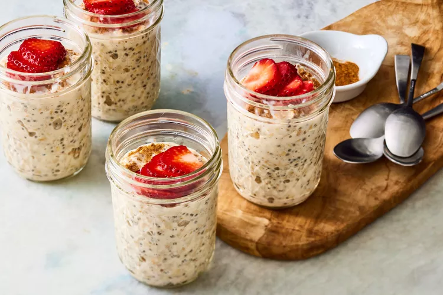

Tres leches, which is Spanish for "three milks," gets its name from the three types of milk that are used to soak the classic cake: whole milk, evaporated milk and sweetened condensed milk. Here, we use those milks to hydrate oats, creating a creamy, satisfying breakfast. A sprinkle of cinnamon adds a nice touch of spice, while sliced strawberries provide a pop of color. Tres leches cake is usually topped with whipped cream—if you want to re-create that creaminess, try topping these oats with some plain yogurt for a breakfast-friendly twist.

Whisk whole milk, evaporated milk, 3 tablespoons condensed milk, chia seeds, vanilla and salt together in a medium bowl until fully combined. Fold in oats.
Spoon 3/4 cup of the oat mixture into each of 4 (8-oz.) jars. Cover and refrigerate for at least 8 hours and up to 4 days.
Just before serving, drizzle each jar of oats with 1/2 teaspoon condensed milk. Sprinkle with cinnamon; top each jar with 2 tablespoons strawberries. Serve chilled.
Refrigerate oat mixture (Steps 1 & 2) for up to 4 days. When ready to serve, proceed with Step 3.
4 (8-oz.) jars with lids